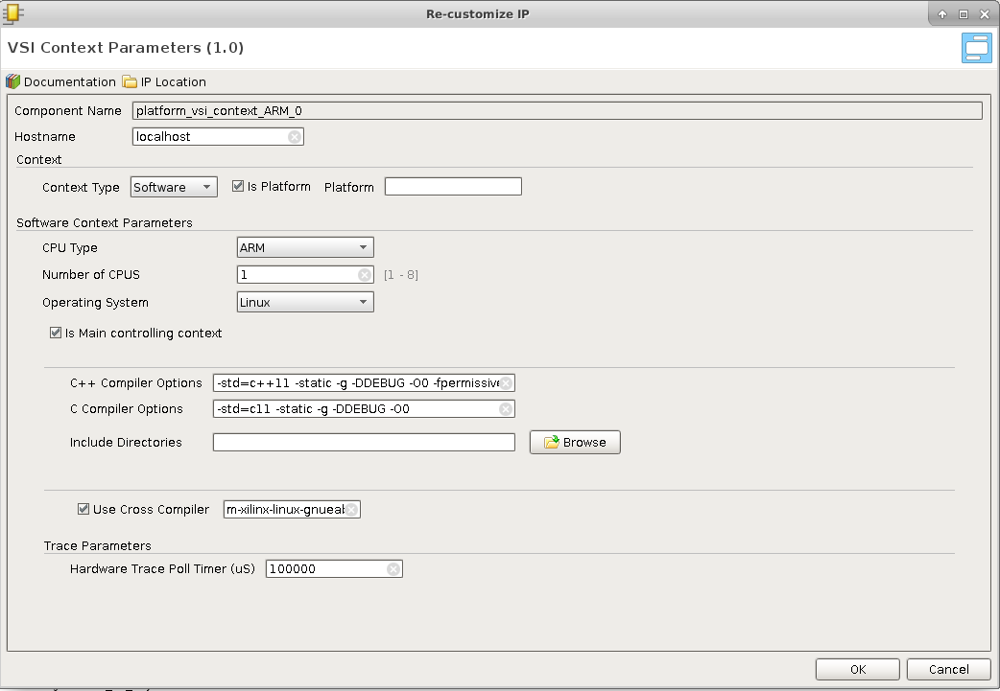
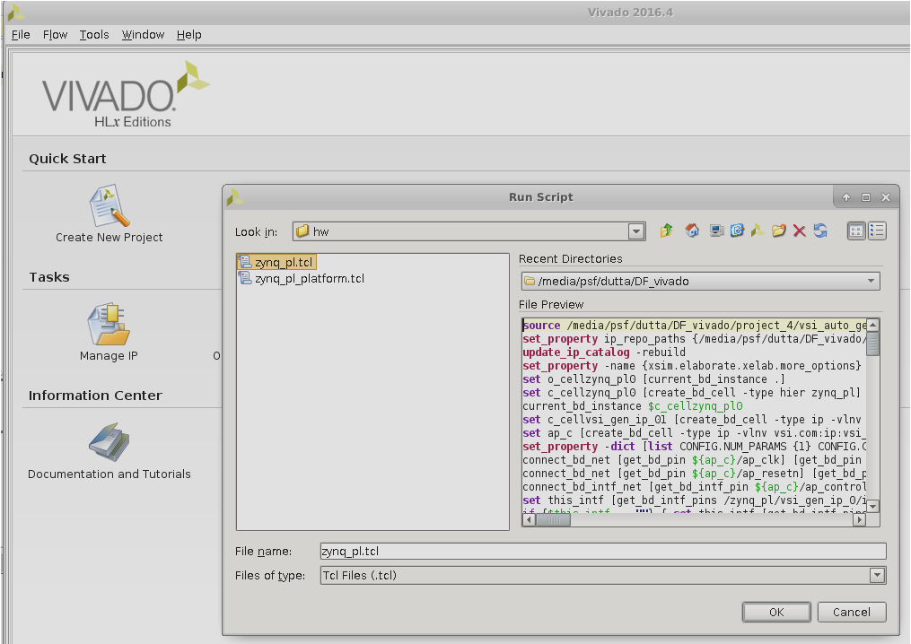

Visual System Integrator: Getting Started Guide
Introduction
This document will describe how to create a simple system using Visual System Integrator. The document assumes that VSI is installed, please follow instructions at http://docs.systemviewinc.com to install the product. In this document, we will describe how to build a Zynq 7000 based system.
Concepts
The Visual System Integrator (VSI) has two canvases a) Platform Canvas & b) System Canvas. The system design process in VSI begins by creating a platform. The platform consists of one or more “Execution context”. An “Execution Context” is defined as an entity in which a Hardware (RTL) or a Software (C,C++,Java) block can be placed for execution. The “Platform” defines the “Execution Contexts” that will be used in this System and how they are connected. VSI currently supports the following “Execution Contexts”
- Software
- X86
- ARM-32 bit
- ARM-64 bit
- ARM-Cortex-R5
- Hardware
- All Xilinx FPGAs supported by Vivado
- Simulator (XSIM, Modelsim)
For Hardware Contexts blocks / interfaces that require timing/location constraints must be placed in the “Platform Context”.
Work Flow
Figure 1 shows the “Work Flow” when using VSI. The user starts by Creating a platform or Importing an existing platform. Once the Platform is Created/Imported the user then “Compiles” the platform. The next step is to create the “Application System” canvas and import the Platform definition. The application development involves importing RTL or C/C++/Java blocks of code with well-defined interfaces and connecting these interfaces to form the Dataflow graph of the Application System. The VSI System Compiler and the VSI Runtime will move the data between these blocks as they execute in their assigned “execution contexts”. With some restrictions, the blocks can be moved between “Execution Contexts”. Once the application system is developed the user can “Generate System” , the VSI System Compiler will generate Vivado IPI Projects (for Hardware Contexts) and CMake based projects (for Software Contexts); there are no restrictions to the number of “Execution Contexts” in the system.

Creating the Project
Start the VSI software
>$(VSI_INSTALL)/host/<HOST_TYPE>/bin/vsi
$(VSI_INSTALL) – path to VSI installation
HOST_TYPE – linux.x86_64 | windows.x86_64
Create a New Project...

Choose a Name & Location

Choose The “Board”
And finish creating the project.

Platform
In this guide we will import an existing platform.
Import Existing platform
Tools --> Run Tcl Script…

Navigate to $(VSI_INSTALL)/host/

This will create a Platform with two “Execution Contexts” . A Software context “zynq_ps” and a Hardware context “zynq_pl”.

Software Context Details
Expand the Software Context “zynq_ps” by clicking on the  . Then double-click on the vsi_context_ARM icon
. Then double-click on the vsi_context_ARM icon 
To inspect the details.

- Hostname : can be replaced by the ip address of the context
- Context Type: Software
- CPU Type : ARM, X86, ARM-64, ARM-R5
- Operating System : Linux/Freertos (currently FreeRtos is supported for ARM-R5 only)
- C++ Compiler Options to use when the project is created for this Software Context.
- C Compiler Options to be used when the project is created for this Context
- Include Directories ; comma separated list of directories that will be used to search for header files.
- Use Cross Compiler : this is the Cross Compiler Prefix prepended to gcc or g++ when the project is generated for this context
Hardware Context Details
Expand the Hardware Context “zynq_ps” by clicking on the . Then clicking on the vsi_context_zynq_1 icon  .
.

- Hostname : is replaced by the ip address if this Hardware context is to be run the simulator , otherwise ignored.
- FPGA Part Number : for this hardware context
- FPGA Board : being used for this project.
- Simulator to use.
- Simulation/Synthesis Design Top : Name of the module to be used as “Top” . The design generated by VSI need not be the top-level module. Top level module must instantiate the design generated by VSI, if this field is left blank then it is assumed that the VSI generated design will be the top-level.
- Simulation/Synthesis Defines & Parameters: is a comma separated list parameter value pairs these will be passed to the Synthesis and Simulation projects. E.g. INX_SIMULATOR=1,DDR4_4G_X16=1
- Synthesis Source Directories : Comma separated list of directories. All sources from these directories will be added to the Synthesis project, in addition to the sources generated by the VSI compiler. Can have environment variables for e.g. $(VSI_INSTALL)/syn_src
- Simulation Source Directories: Comma separated list of directories. All sources from these directories will be added to the Simulation project, in addition to the sources generated by the VSI compiler. Can have environment variables for e.g. $(VSI_INSTALL)/sim_src
- Synthesis Include Directories : Comma separated list of directories. These include directories are added to the search path of the synthesis project. Can contain environment variables.
- Simulation Include Directories : Comma separated list of directories. These include directories are added to the search path of the Simulation project. Can contain environment variables.
- Simulation file list : is a file that contains a list of files . The file must contain only one filename per line. When this file is provided the “automatic” source code ordering is disabled for this project.
Context connections
Expanding and zooming into each context we see that the “Device Driver” block in the “Software Context” is connected to the “VSI Common Interface” in the Hardware Context. This describes the connectivity between the two contexts. The connection represents a logical connection between the two contexts and allows the VSI system compiler to determine the connectivity.

Device Driver
The user can configure various parameters of the device driver using the Device Driver configuration panel.

- Driver Library Name : Is the kernel Image name which will be installed when the application program for this context is started.
- Driver Type : Lets the VSI System Level compiler decide the driver specific mechanism to use when communicating with this driver.
- ZYNQ (Connected to FPGA Over AXI Interfaces)
- PCI/E (Connected to FPGA Over a PCIe Link)
- OpenAMP (Connected to Another Software Context Using Open APM)
- Simulator (Connected To A simulator using Remote Procedure Call [RPC])
- Major Number : For Driver Type “Zynq”, “PCIe” & “OpenAMP” the driver uses a “File” based mechanism to communicate with the driver. The Major number species the Major number to use for this driver in the linux kernel, default value is 241 can be changed if this major number is already being used by another driver in the system.
- Control Port Base Address: The driver internally uses this value to determine if a DMA will be needed to transfer the data , or a “direct” read write operation can be performed.
- PCI/e System Memory Address : For Driver Type PCI/e the system memory can be mapped to any address by default it is mapped to zero. If the PCI/e Core is configured to a different address then this parameter should be updated to match.
- PCI/e Device ID : For Driver Type PCI/e this parameter should match the hardware PCI/e core configuration.
- Size of DMA Buffer: The DMA during initialization allocates a contiguous memory buffer to communicate with the DMA. This parameter determines the total memory allocated for this buffer.
- Buffer Size for each file : Each file is allocated a certain amount of buffer space from the DMA buffer mentioned before; This parameter determines the amount of buffer per file.
- Interrupt controller Address : Base address of the interrupt controller in the VSI Common interface (typically should not change).
- CDMA Base address – Address of the first CDMA’s control port in the VSI Common Interface (typically should not change).
- Enable 2nd CDMA – Enable the second CDMA in the VSI Common interface.
- Base Address of the 2nd CDMA – Base address of the 2nd CDMA if enabled.
VSI Common Interface
Is the Hardware (FPGA) side of the connectivity . It is a collection of DMAs and an Interrupt controller and can operate with ALL versions of ZynQ & over PCI/e. The following screenshot shows the configuration dialog for the VSI Common Interface.

The current version of the VSI Common Interface can be configured with upto 2 DMAs; future versions will have more DMAs. The DMAs communicate with the System Memory using the DMA[n] interfaces , these interfaces should be connected to PCI/e Slave Port, or the Zynq HP[n] ports. The M_AXI[n] ports are left open and used by the VSI System Compiler to connect processing blocks that are placed in the Hardware execution Context. The CTRL is used by the compiler to connect the AXI – Lite control interfaces. Interrupts from the blocks are connected by the System Compiler to the open interrupt input irqi[n]. The output interrupt from the VSI Common Interface is connected to the input of the Zynq processing block or the PCI/e block’s interrupt input.
Compile Platform
This completes the Platform Import process. The platform now needs to be “Compiled” . Click Flow --> Compile Platform to compile the platform.

Application System Canvas
Create Application System Canvas
The Application Canvas is created by Clicking Flow --> Create System …

This will create a blank “System Canvas”

Import Platform
We will “Import” the platform definition.

After we import the execution contexts show up as blank entities.

Develop Application
In VSI the application development process involves importing/creating blocks and connecting the interfaces of the blocks to represent the dataflow model of the entire system. The Blocks can be imported from a Library (these blocks have predefined interfaces). The user can also choose to import pre-existing C/C++/Java functions into the canvas using the “Software Import Wizard”, the arguments of the functions chosen to be imported become the interfaces of the imported block. See “VSI User Guide” for more details on the Software Import Wizard.
Import Block From Library:
We will import a TCP/IP server from the Library in the Software Context “zynq_ps”, this block will be used to send and receive data from the external host. Double click anywhere in the software context enter into it. Right-Click and select “Add IP … “.

Select “VSI TCP Server v1.0”.

This will place the TCP/IP server in the System Canvas.

Double click on the TCP/IP server block to check the configuration.

In the default configuration, the server will open the port 2020 and wait for connection from “any” host. When a connection request is received, it will accept the connection. Any data received by the server is sent to the interface “server_data_out”. Any data received on “server_data_in” is sent back to the client that is attached to the port. Note there is no predefined protocol , the raw data received on the socket is sent to the interface (server_data_out) , and raw data received on the interface (server_data_in) is sent on the socket. The TCP/IP server acts as a Data interface to the external host.
Import C/C++ code
We will use the “Software Import Wizard” to import a “sort” function as a block . Refer to the Section “Software Import Wizard” in “VSI User Guide” for more details on the Wizard. Right-click and select “Add IP …”

Select “VSI Software Import Wizard” .

Double-Click on “vsi_gen_ip_0” to import the “sort” C function. The “Source Directory” box either “Browse” to or enter the directory $(VSI_INSTALL)/target/common/hls_examples/sort (note you will need to enter the absolute PATH to the directory, environment variables are NOT allowed). The “Software Import Wizard” will call a “built-in” C/C++ parser and present drop-down list of functions it finds (C/C++ Function Name).

Choose the sort function , and navigate to the “Arguments” tab.

The “Arguments” tab will show the two arguments “in_arr” and “out_arr” with some default values filled in.

Update the Fields marked in the screen shots.
- Mark “in_arr” as an “Execution Trigger”; this indicates that the VSI runtime will execute this function whenever data is available in this input interface.
- Mark the “Direction” of “out_arr” as “output”. The sort function puts the output into this buffer when it finishes execution.
- Change “Access Type” of “out_arr” to “Random”. The sort algorithm accesses the output array in a non-sequential fashion. The “Access Type” will ensure that a “Block Ram” interface is generated for this interface when placed in a “Hardware Context”.
Click OK. The interfaces of the block are now updated to reflect the name and direction specified in the “Arguments” tab.

Connect the “server_data_out” interface of the TCP/IP server block to the “in_arr” interface of the “vsi_gen_ip_0” block. And connect the “out_arr” interface of the “vsi_gen_ip_0” block to the “server_data_in” interface of the TCP/IP block to complete the System Design.

The VSI runtime will now ensure that when data arrives on the “socket” of the TCP/IP it will be sent to the input of the “sort” function, and when the sort function finishes the VSI runtime will send the data from “out_arr” to the TCP/IP server which will send it back over the “socket” to the connected client.
Moving Blocks between Contexts:
Some blocks can be moved between execution contexts. In this example the “sort” function is code is synthesizable to hardware using the Vivado HLS C RTL compiler and hence can be moved to Hardware Context (“zynq_pl”).
Go back to the system level diagram by clicking the “system_1” tab in the Diagram view.

Expand both the contexts by clicking on the . Select the “vsi_gen_ip_0” block and drag it inside the Hardware Context (“zynq_pl”) and release it. Not all blocks can be moved between contexts, an attempt to move the “TCP/IP” server block will result in error.

When the VSI System Compiler detects an interface crossing between two “Execution Contexts”, it will configure the runtime environment on the Software Context (“zynq_ps”) to communicate with the “Device Driver” described in the Platform. On the Hardware Context it will connect the interfaces to the “vsi_common_interface” and setup the driver for the communication channels. Each interface that crosses the boundary is treated a separate channel. In this example, we have two interfaces that are crossing the boundary, hence two communication channels will be setup for the driver. There are no limits to the number of interfaces that can cross between contexts.
Setting up Trace
Any interface in the VSI system diagram can be instrumented for “trace”. To enable trace on an interface right-click on the interface connection and click “Toggle Trace”.

A special icon will appear on all the interfaces annotated for trace.

With this application development phase for this example, is complete.
Build Application
Generate Projects for Hardware & Software Contexts.
This step will generate complete projects for all Software & Hardware projects. With the System Canvas open Click on Flow --> Generate System …

All projects are generated. They are placed in the following location
- $
/vsi_auto_gen/hls – directory contains all Vivado HLS projects for all Hardware Contexts. It contains a top level makefile. The user can cd to this directory and type “make” and all the HLS projects will be built. - $
/vsi_auto_gen/sw – directory contains the software projects for all the software contexts; each software context has its sub-directory . In this example, there will one directory “zynq_ps”. - $
/vsi_auto_gen/hw – directory contains scripts for creating Vivado IPI project for each Hardware Context.
Build the High-Level Synthesis blocks.
This step will call Vivado HLS under the hood to create RTL blocks for all synthesizable C/C++ blocks that are in Hardware Contexts. Please note this step might take a few minutes. With the System Canvas open click on Flow Build HLS …

Build the executables for Software Contexts.
In this step, we will create the executables for all the Software Execution contexts. With the system canvas, open click Flow --> Build Software Contexts….

This call the compiler or cross-compiler specified in the context definition and generate the executables for each of the software contexts in the project. The executable is placed the directory $
Building the Hardware Project:
In this step, we will start Vivado and create the project generated by VSI System Compiler. Begin by starting Vivado. Optionally use the tcl console at the bottom to change directory to the location where you want the hardware project to be generated.

Run the Generated TCL script to create the Hardware Project.

The generated TCL script is located at $

The complete design is created, click on the “Generate Bitstream” button to create the FPGA bitstream.

This completes the build process for the example project.
Execute Application
In this section, we will go through the steps of executing the generated project on a Zynq-SoC Based MicroZed board.
Prerequisites:
- Build the Linux kernel and root file system for the Board you are using
- Follow instructions @ http://release.systemviewinc.com : FPGA Driver:
on building the System View Universal device driver. At the end of the steps you will have the driver kernel image “vsi_driver.ko”. - Copying Files:
Login to your board and create a directory in the root-file-system, this is an optional step. It will help you isolate the files being copied. Four files need to be copied from the build directory to the target filesystem. - The bitstream file
- For Non-Yocto linux kernels . The Bitstream generated by Vivado “Hardware Context Name”_wrapper.bin (zynq_pl_wrapper.bin). This file can be found at
/zynq_pl/zynq_pl.runs/impl_1/zynq_pl_wrapper.bin, the hw_project_directory you used to create the Vivado project in step “Building Hardware Project”. - For Yocto Linux kernels . The Bitstream generated by Vivado “Hardware Context Name”_wrapper.bit (zynq_pl_wrapper.bit). This file can be found at
/zynq_pl/zynq_pl.runs/impl_1/zynq_pl_wrapper.bit, the hw_project_directory you used to create the Vivado project in step “Building Hardware Project”.
- For Non-Yocto linux kernels . The Bitstream generated by Vivado “Hardware Context Name”_wrapper.bin (zynq_pl_wrapper.bin). This file can be found at
- The driver installation script found at $
/vsi_auto_gen/sw/ /driver.sh ($ /vsi_auto_gen/sw/zynq_ps/driver.sh) - The Software Executable $
/vsi_auto_gen/sw/build/ /bin/ ($ /vsi_auto_gen/sw/build/zynq_ps/bin/zynq_ps) - The device driver “vsi_driver.ko” created in the previous step.
Start Application on Target
- The following step will configure the FPGA with the bitstream copied in the previous step
- cat zynq_pl_wrapper.bin > /dev/xdevcfg
- Load the driver , you might need to change the execute permissions “chmod +x ./driver.sh”
- ./driver.sh
- Start the application
- ./zynq_ps
Send Data to Application
At this point the application is up and running and is waiting for data on the TCP/IP Socket . System View provides two applications to send data to the target. The source code for both can be downloaded from http://release.systemviewinc.com : TCP Clients [Folder]
Python client
echo_client.py is a simple python program that will connect and send data to a TCP/IP server to run this client on the host from which you want to send the data.
python echo_client.py
ex: python echo_client.py 192.168.2.21 2020 1
Output should look like this: 0 connecting to 192.168.2.21 port 2020 sending "4096" total receiving "4096" total closing socket *Checking Data** TX data length: 1024 RX data length: 1024 *RX data matches TX sorted data*
Socket C Client
This client will read from a file and send the data to a TCP/IP server , the source code is provided “sock_send_recv_file.c”, it needs to be compiled on the host that will send the data to the target.
Compile: gcc –o sock_send_recv_file sock_send_recv_file.c –lpthread
Execute : sock_send_recv_file <ip_address> <port_no> <input_file> <output_file> <packet_size>
sock_send_recv_file 192.168.2.21 2020 sort.in sort.out 4096
Running Trace
If any interface in the system design is annotated for “trace” then a trace server is automatically built-into the application. Download the latest trace application from http://release.systemviewinc.com : Trace Application [folder] for the appropriate host. Once the application is running in the previous step, the trace application can be connected to the application to view realtime transaction trace information for the complete system.

Enter the IP Address of the target and press connect to start trace data collection & display.